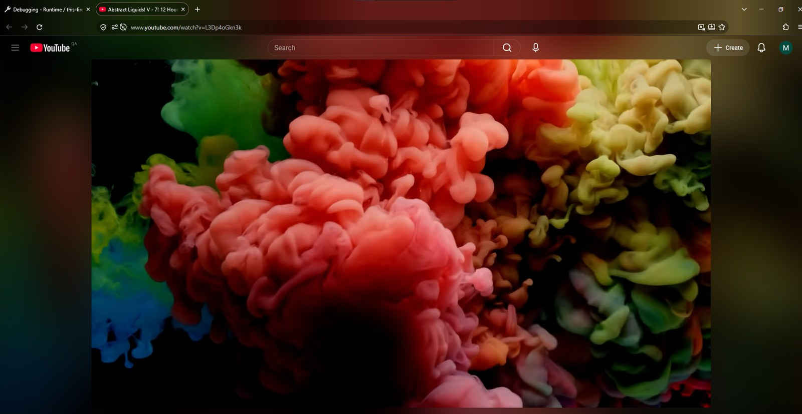
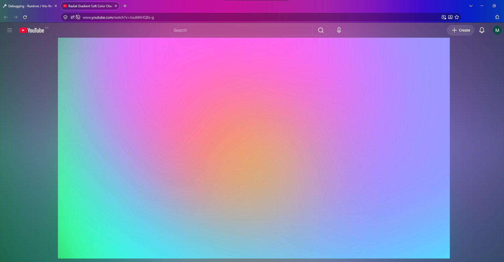
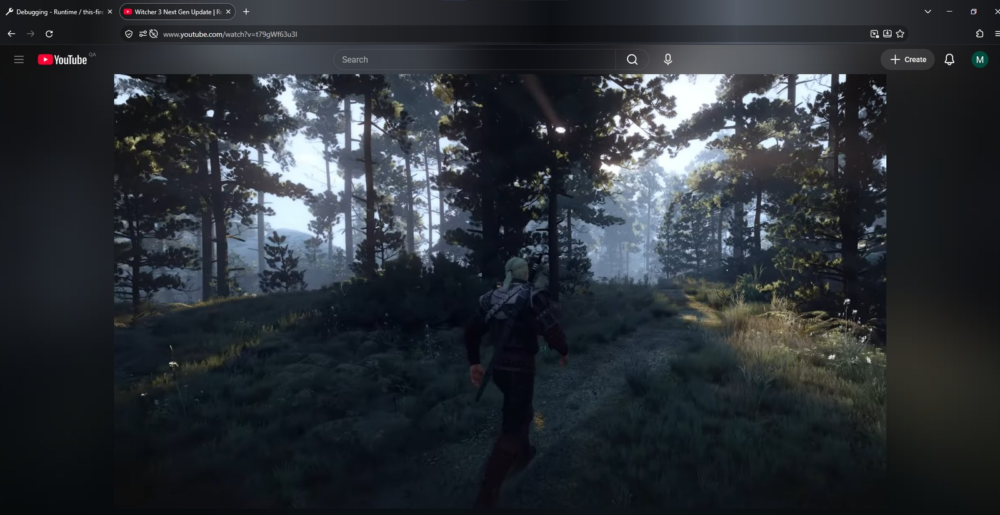

Your toolbar, glowing with the video.
Ambient Toolbar is a Firefox add-on that tints your tab bar and toolbar in real time to match the YouTube video you're watching. It's like ambient light that reaches past the video and into the browser.




Features
Built to blend with the glow around the video.
Gradient glow
A left-to-right glow across the whole header that follows the colors along the top of the video.
Fully adjustable
Blur, edge size, spread fade, brightness, saturation, contrast, color temperature and more.
Flicker-free
A tiny 1-pixel strip with double buffering, so the glow updates without flashing.
Smart behavior
Keeps its color while paused, updates when you seek, and restores your theme when you leave the video.
Always readable
Text and icons switch between light and dark automatically, or you can pick one.
Black bars ignored
Letterboxed videos don't darken the toolbar. Colors come from the actual picture.
Pairs with Ambient light
Calibrated to match Ambient light for YouTube, and it can import that add-on's settings.
Private
Everything happens on your device. No data is collected or sent anywhere.
Make it yours
Open the toolbar button, or go to Add-ons → Ambient Toolbar → Options. Changes apply live, even while paused. Turn on Advanced to see every option.
- Ambient light: gradient glow on or off, color picking, black-bar removal, blur, edge size, spread fade and color zones.
- Filters: brightness, saturation, contrast and color temperature.
- Toolbar: how much the toolbar is shaded, and the text and icon color.
- Motion: how fast the colors fade, and how often the glow redraws.

Better together with Ambient light for YouTube
Ambient light for YouTube adds a glow around the video, and Ambient Toolbar carries it up into the tab bar and toolbar. Each works on its own, but together the whole window glows.
Matched by default
The default look is calibrated against Ambient light's glow, so the two blend without any setup.
Import its settings
Toolbar popup → Import / Export…, and choose an Ambient light settings export. Its edge size, spread and fading are converted for you.
Recommended pair
The settings from these screenshots are in the presets folder: one file for Ambient light, and a one-click Recommended preset in Ambient Toolbar.
Ambient Toolbar is an independent project and isn't affiliated with Ambient light for YouTube.
How it works
Firefox doesn't let add-ons draw into the toolbar, but it does let them change the window's theme.
- Sample. The add-on shrinks the top of the playing video, skipping black bars, to a tiny pixel grid about 20 times a second, entirely on your device.
- Smooth. Colors are eased over time and graded with your brightness, saturation, contrast and temperature settings.
- Tint. The background script updates the theme for that window only, with
browser.theme.update. It sets the colors, plus a 1-pixel glow strip layered over the previous one so it doesn't flicker.
Install
From Firefox Add-ons
The easiest way, with automatic updates: addons.mozilla.org.
From GitHub Releases
Download the signed .xpi from Releases and drag it into Firefox.
For development
Open about:debugging → This Firefox → Load Temporary Add-on, and choose extension/manifest.json.
Requires Firefox 142 or newer. DRM-protected videos (some movies and rentals) can't be sampled.